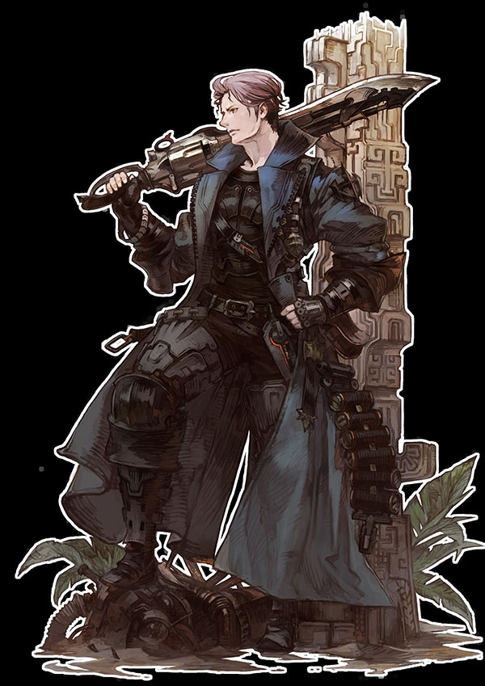
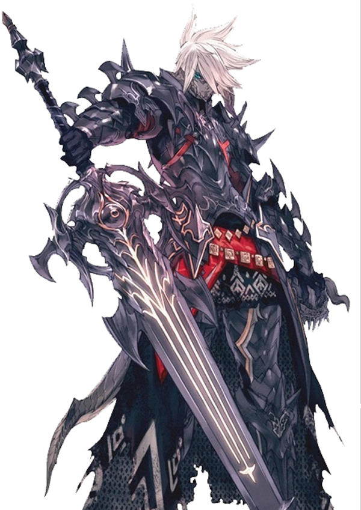
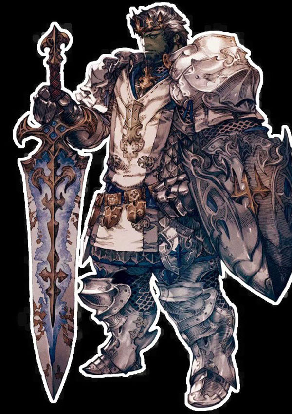
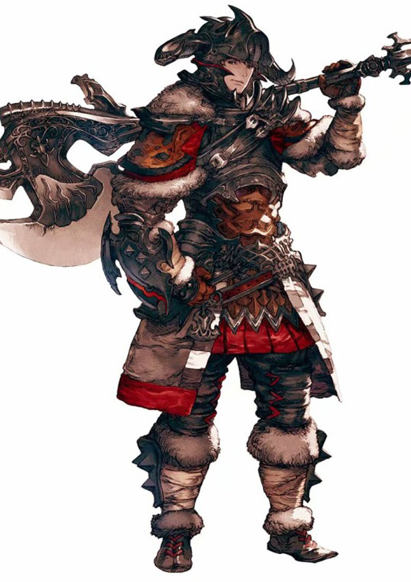

絕槍戰士
絕槍戰士以槍刃作為武器，是以吸引敵方仇恨，保護隊友為責的防護職業。由於是版本 5.0添加的追加特職，絕槍戰士不由基礎職業轉職而來，且轉職後等級從60開始。
暗黑騎士
暗黑騎士以雙手大劍作為武器，是以吸引敵方仇恨，保護隊友為責的防護職業。由於是版本 3.0添加的追加特職，暗黑騎士不由基礎職業轉職而來，且轉職後等級從30開始。
騎士
騎士是以單手劍和盾作為武器的戰鬥精英，是以吸引敵方仇恨，保護隊友為責的防護職業。騎士的裝備以金屬甲胄為主。主要屬性為增加血量的耐力，同時力量屬性會提升攻擊力。因為騎士能打能抗能奶，又被稱為彩色職業。（藍色防禦，紅色輸出，綠色治療，彩色騎士）
戰士
戰士是以巨斧作為武器，穿著金屬甲胄的戰鬥精英，是以吸引敵方仇恨，保護隊友為責的防護職業。戰士的主要屬性為提升血量的耐力和提升輸出能力的力量。特點則是依靠連擊獲得的獸魂值可用於爆發輸出，同時有著出色的自愈能力。